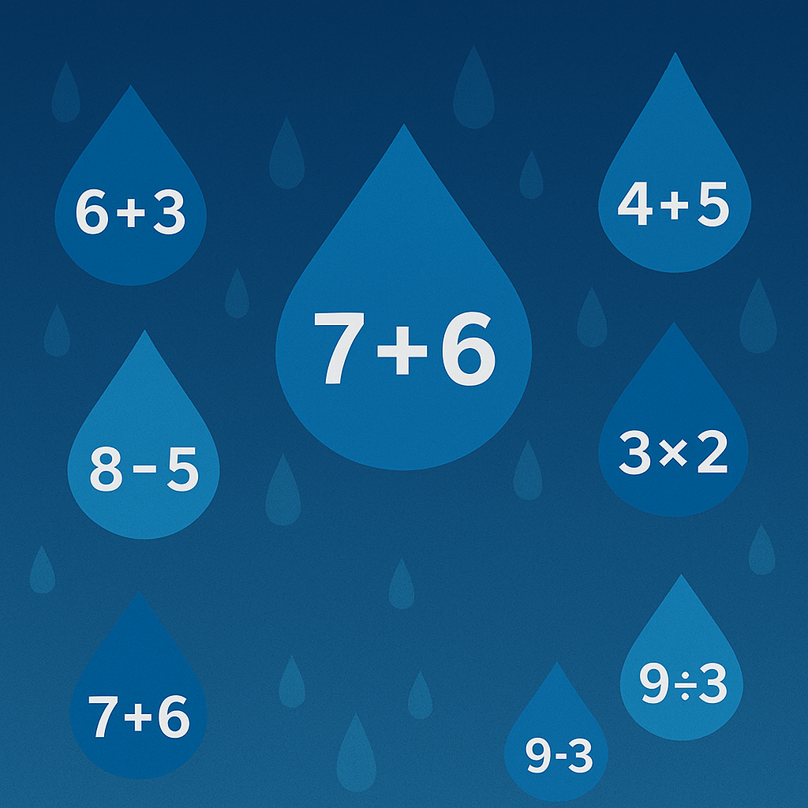
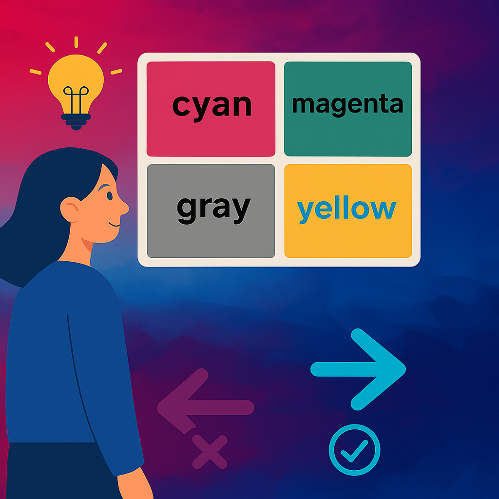
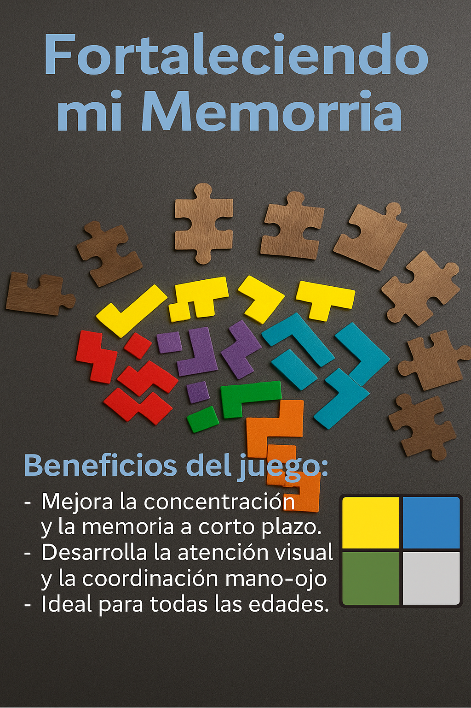
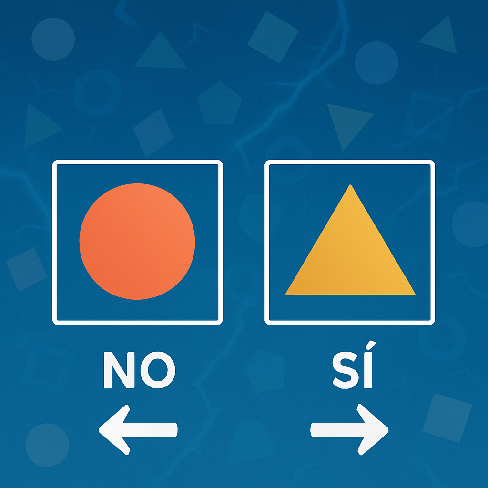

¡Diviértete con juegos asombrosos que desafían tu mente y tus habilidades!

¡Resuelve operaciones antes de que caigan! Mantente enfocado, rápido y preciso para sumar puntos y alcanzar agilidad mental.
VER MÁS INFORMACIÓN →
Compara el nombre en inglés con el color visual del texto. Usa las flechas del teclado: → (Sí) si coinciden ← (No) si no coinciden
VER MÁS INFORMACIÓN →
Poner a prueba y mejorar tu memoria visual a corto plazo, recordando y repitiendo secuencias de colores o luces que se iluminan dentro de una cuadrícula.
VER MÁS INFORMACIÓN →
Estimula la agilidad y percepción visual del jugador a través de la comparación rápida entre dos figuras, promoviendo una decisión rápida bajo presión.
VER MÁS INFORMACIÓN →